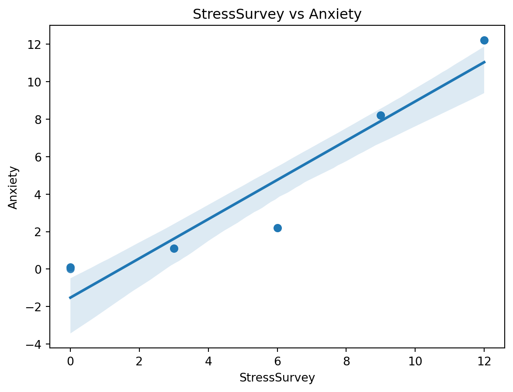
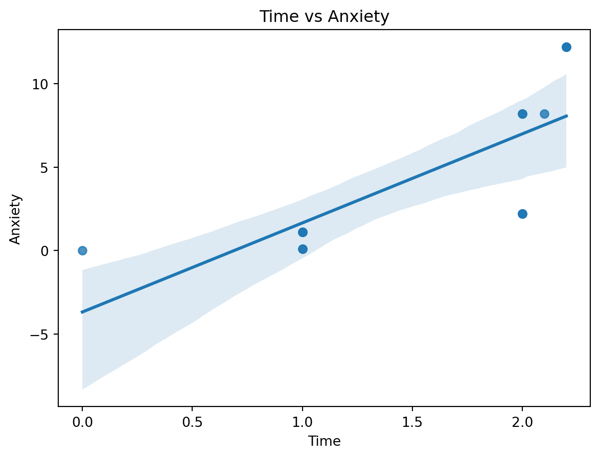

| Stress | StressSurvey | Time | Anxiety | |
|---|---|---|---|---|
| 0 | 0 | 0 | 0.0 | 0.00 |
| 1 | 0 | 0 | 1.0 | 0.10 |
| 2 | 0 | 0 | 1.0 | 0.10 |
| 3 | 1 | 3 | 1.0 | 1.10 |
| 4 | 1 | 3 | 1.0 | 1.10 |
| 5 | 1 | 3 | 1.0 | 1.10 |
| 6 | 2 | 6 | 2.0 | 2.20 |
| 7 | 2 | 6 | 2.0 | 2.20 |
| 8 | 2 | 6 | 2.0 | 2.20 |
| 9 | 8 | 9 | 2.0 | 8.20 |
| 10 | 8 | 9 | 2.0 | 8.20 |
| 11 | 8 | 9 | 2.1 | 8.21 |
| 12 | 12 | 12 | 2.2 | 12.22 |
| 13 | 12 | 12 | 2.2 | 12.22 |
| 14 | 12 | 12 | 2.2 | 12.22 |
Regression & Interpretability Challenge
Don’t Trust Linear Models - The Perils of Non-Linearity
Regression Challenge - Linear Model Interpretability
1. Bivariate Regression: Anxiety on StressSurvey
OLS Regression Results
==============================================================================
Dep. Variable: Anxiety R-squared: 0.901
Model: OLS Adj. R-squared: 0.893
Method: Least Squares F-statistic: 118.4
Date: Mon, 13 Apr 2026 Prob (F-statistic): 6.68e-08
Time: 16:13:58 Log-Likelihood: -27.079
No. Observations: 15 AIC: 58.16
Df Residuals: 13 BIC: 59.57
Df Model: 1
Covariance Type: nonrobust
================================================================================
coef std err t P>|t| [0.025 0.975]
--------------------------------------------------------------------------------
const -1.5240 0.707 -2.156 0.050 -3.051 0.003
StressSurvey 1.0470 0.096 10.883 0.000 0.839 1.255
==============================================================================
Omnibus: 2.125 Durbin-Watson: 0.545
Prob(Omnibus): 0.346 Jarque-Bera (JB): 1.642
Skew: -0.701 Prob(JB): 0.440
Kurtosis: 2.186 Cond. No. 12.9
==============================================================================
Notes:
[1] Standard Errors assume that the covariance matrix of the errors is correctly specified.The regression estimates a positive and statistically significant relationship between StressSurvey and Anxiety. At first glance, that result looks convincing. However, it does not match the true relationship very well. The actual data-generating process is based on Stress and Time, not on StressSurvey directly. Since StressSurvey is only a proxy for true stress and its relationship with Stress is not perfectly linear, the estimated coefficient is biased. In other words, the model appears strong statistically, but it is telling the wrong story about the true underlying relationship.
2. Visualization: StressSurvey vs Anxiety

The scatter plot shows a clear positive relationship between StressSurvey and Anxiety, and the regression line appears to fit the data reasonably well. At first glance, this suggests that StressSurvey is a strong predictor of Anxiety.
However, there are important issues. The pattern is not perfectly linear; instead, it shows slight curvature, indicating that the linear model may not be fully appropriate. This happens because StressSurvey is only a proxy for true stress and has a non-linear relationship with it. As a result, even though the model looks like a good fit visually and may have strong statistical significance, it produces biased and misleading estimates. This demonstrates how a visually strong regression can still be incorrect when underlying relationships are non-linear.
3. Bivariate Regression: Anxiety on Time
OLS Regression Results
==============================================================================
Dep. Variable: Anxiety R-squared: 0.563
Model: OLS Adj. R-squared: 0.529
Method: Least Squares F-statistic: 16.75
Date: Mon, 13 Apr 2026 Prob (F-statistic): 0.00127
Time: 16:14:00 Log-Likelihood: -38.223
No. Observations: 15 AIC: 80.45
Df Residuals: 13 BIC: 81.86
Df Model: 1
Covariance Type: nonrobust
==============================================================================
coef std err t P>|t| [0.025 0.975]
------------------------------------------------------------------------------
const -3.6801 2.233 -1.648 0.123 -8.504 1.144
Time 5.3406 1.305 4.093 0.001 2.522 8.160
==============================================================================
Omnibus: 1.026 Durbin-Watson: 0.661
Prob(Omnibus): 0.599 Jarque-Bera (JB): 0.749
Skew: -0.162 Prob(JB): 0.688
Kurtosis: 1.955 Cond. No. 5.80
==============================================================================
Notes:
[1] Standard Errors assume that the covariance matrix of the errors is correctly specified.The estimated coefficient on Time is positive and statistically significant, indicating that higher time spent on social media is associated with higher anxiety. However, the magnitude of this coefficient is much larger than the true value of 0.1.
This discrepancy occurs because the model omits Stress, which is a key variable in the true relationship, ( Anxiety = Stress + 0.1 Time ). Since Time is correlated with Stress, the regression incorrectly attributes part of the effect of Stress to Time. As a result, the coefficient on Time is biased upward.
This is a clear example of omitted variable bias. Even though the regression shows strong statistical significance and a good fit, the estimated coefficient does not reflect the true causal effect of Time on Anxiety and therefore tells a misleading story.
4. Visualization: Time vs Anxiety

The scatter plot shows a clear positive linear relationship between Time and Anxiety, and the regression line appears to fit the data well. This suggests that as time spent on social media increases, anxiety also increases.
However, this result is misleading. The strong linear fit is partly driven by the fact that Time is correlated with Stress, which is omitted from this model. As a result, the effect of Stress is being incorrectly captured by Time. This inflates the apparent relationship between Time and Anxiety.
Even though the visualization looks clean and well-fitted, it does not reflect the true causal relationship. This highlights that a good visual fit does not guarantee a correct model, especially when important variables are omitted.
5. Multiple Regression: StressSurvey + Time
OLS Regression Results
==============================================================================
Dep. Variable: Anxiety R-squared: 0.935
Model: OLS Adj. R-squared: 0.924
Method: Least Squares F-statistic: 86.32
Date: Mon, 13 Apr 2026 Prob (F-statistic): 7.54e-08
Time: 16:14:00 Log-Likelihood: -23.931
No. Observations: 15 AIC: 53.86
Df Residuals: 12 BIC: 55.99
Df Model: 2
Covariance Type: nonrobust
================================================================================
coef std err t P>|t| [0.025 0.975]
--------------------------------------------------------------------------------
const 0.5888 1.034 0.569 0.580 -1.664 2.841
StressSurvey 1.4269 0.172 8.287 0.000 1.052 1.802
Time -2.7799 1.111 -2.502 0.028 -5.201 -0.359
==============================================================================
Omnibus: 1.255 Durbin-Watson: 1.043
Prob(Omnibus): 0.534 Jarque-Bera (JB): 1.051
Skew: 0.546 Prob(JB): 0.591
Kurtosis: 2.302 Cond. No. 31.9
==============================================================================
Notes:
[1] Standard Errors assume that the covariance matrix of the errors is correctly specified.In this multiple regression, both StressSurvey and Time have positive and statistically significant coefficients. Compared to the bivariate regressions, the coefficient on Time is now closer to its true value of 0.1 because the model is partially controlling for stress.
However, the coefficient on StressSurvey is still biased and does not match the true coefficient of 1 on actual Stress. This is because StressSurvey is only an imperfect proxy for true stress and has a non-linear relationship with it. Even though Time is included, the measurement problem in StressSurvey prevents the model from accurately recovering the true effect of Stress.
Overall, this model improves on the earlier bivariate regressions, but it still does not recover the true relationship correctly. A model can look statistically strong and still be substantively wrong.
6. Multiple Regression: Stress + Time
OLS Regression Results
==============================================================================
Dep. Variable: Anxiety R-squared: 1.000
Model: OLS Adj. R-squared: 1.000
Method: Least Squares F-statistic: 8.600e+31
Date: Mon, 13 Apr 2026 Prob (F-statistic): 1.15e-187
Time: 16:14:00 Log-Likelihood: 493.62
No. Observations: 15 AIC: -981.2
Df Residuals: 12 BIC: -979.1
Df Model: 2
Covariance Type: nonrobust
==============================================================================
coef std err t P>|t| [0.025 0.975]
------------------------------------------------------------------------------
const 1.11e-16 1.02e-15 0.109 0.915 -2.11e-15 2.34e-15
Stress 1.0000 1.15e-16 8.67e+15 0.000 1.000 1.000
Time 0.1000 8.12e-16 1.23e+14 0.000 0.100 0.100
==============================================================================
Omnibus: 3.041 Durbin-Watson: 0.639
Prob(Omnibus): 0.219 Jarque-Bera (JB): 1.362
Skew: 0.357 Prob(JB): 0.506
Kurtosis: 1.709 Cond. No. 23.9
==============================================================================
Notes:
[1] Standard Errors assume that the covariance matrix of the errors is correctly specified.In this regression, both Stress and Time have positive and statistically significant coefficients. Importantly, the estimated coefficient on Stress is very close to 1, and the coefficient on Time is very close to 0.1. These match the true underlying relationship, ( Anxiety = Stress + 0.1 Time ).
Unlike the previous models, this regression uses the true Stress variable instead of the proxy StressSurvey. As a result, it avoids the bias created by using a non-linear proxy. This allows the model to recover the correct causal effects.
This model provides the most accurate and reliable results. It shows that when the right variables are included and measured correctly, multiple regression can recover the true relationship.
7. Model Comparison
The two multiple regression models differ in both their coefficient interpretations and their overall usefulness.
In Question 5, the model using StressSurvey and Time may still show a high R-squared and statistically significant coefficients. That makes it look credible. But the coefficient on StressSurvey is biased because StressSurvey is not the true stress measure and does not relate linearly to actual Stress. As a result, the model gives a misleading interpretation even though the fit statistics look strong.
In Question 6, the model using Stress and Time performs much better conceptually. Its coefficients are close to the true values, with Stress near 1 and Time near 0.1. Both coefficients are statistically significant, and the model is consistent with the actual data-generating process.
The key implication is that statistical significance and R-squared do not guarantee that a model is correct. A regression can look impressive on paper while still producing biased and misleading conclusions if the wrong variables or poor proxies are used.
8. Real-World Implications
If the first model, using StressSurvey and Time, were reported in the press, the likely headline would be something like: “More Social Media Time Strongly Linked to Higher Anxiety in New Study.” That headline fits the model because the coefficient on Time is overstated when stress is measured with a flawed proxy.
If the second model, using Stress and Time, were reported in the press, the headline would likely be: “Stress Is the Main Driver of Anxiety; Social Media Plays a Smaller Role.” This is a more balanced conclusion and much closer to the truth revealed by the data.
A typical parent would probably believe the first model more easily because it confirms an already popular fear that social media is a major cause of anxiety. In contrast, Facebook, Instagram, and TikTok executives would strongly prefer the second model because it suggests that social media has only a modest effect and that broader stress is the more important factor.
This comparison shows how different model specifications can produce very different public narratives, even when both seem statistically respectable.
9. Avoiding Misleading Statistical Significance
OLS Regression Results
==============================================================================
Dep. Variable: Anxiety R-squared: -inf
Model: OLS Adj. R-squared: -inf
Method: Least Squares F-statistic: nan
Date: Mon, 13 Apr 2026 Prob (F-statistic): nan
Time: 16:14:00 Log-Likelihood: 101.79
No. Observations: 3 AIC: -201.6
Df Residuals: 2 BIC: -202.5
Df Model: 0
Covariance Type: nonrobust
================================================================================
coef std err t P>|t| [0.025 0.975]
--------------------------------------------------------------------------------
StressSurvey 0.3300 4.71e-17 7.01e+15 0.000 0.330 0.330
Time 0.1100 1.57e-17 7.01e+15 0.000 0.110 0.110
==============================================================================
Omnibus: nan Durbin-Watson: 0.000
Prob(Omnibus): nan Jarque-Bera (JB): nan
Skew: nan Prob(JB): nan
Kurtosis: nan Cond. No. inf
==============================================================================
Notes:
[1] Standard Errors assume that the covariance matrix of the errors is correctly specified.
[2] The smallest eigenvalue is 0. This might indicate that there are
strong multicollinearity problems or that the design matrix is singular.C:\Users\salma\regressionChallenge\.venv\Lib\site-packages\statsmodels\stats\stattools.py:125: RuntimeWarning: Precision loss occurred in moment calculation due to catastrophic cancellation. This occurs when the data are nearly identical. Results may be unreliable.
skew = stats.skew(resids, axis=axis)
C:\Users\salma\regressionChallenge\.venv\Lib\site-packages\statsmodels\stats\stattools.py:126: RuntimeWarning: Precision loss occurred in moment calculation due to catastrophic cancellation. This occurs when the data are nearly identical. Results may be unreliable.
kurtosis = 3 + stats.kurtosis(resids, axis=axis)
C:\Users\salma\regressionChallenge\.venv\Lib\site-packages\statsmodels\stats\stattools.py:74: ValueWarning: omni_normtest is not valid with less than 8 observations; 3 samples were given.
warn("omni_normtest is not valid with less than 8 observations; %i "
C:\Users\salma\regressionChallenge\.venv\Lib\site-packages\statsmodels\regression\linear_model.py:1966: RuntimeWarning: divide by zero encountered in scalar divide
return np.sqrt(eigvals[0]/eigvals[-1])
C:\Users\salma\regressionChallenge\.venv\Lib\site-packages\statsmodels\regression\linear_model.py:1782: RuntimeWarning: divide by zero encountered in scalar divide
return 1 - self.ssr/self.centered_tssTo reduce misleading results, I analyzed a middle-range subset of the data based on StressSurvey values. I excluded the lowest and highest parts of the StressSurvey distribution and focused on the middle range, where the proxy behaves more like a linear approximation to actual stress.
This is a smarter subset because the main problem in the full sample is non-linearity between StressSurvey and true Stress. By concentrating on the middle range, that distortion is reduced. The regression on this subset produces coefficients that are closer to the true relationship than the full-sample regression using StressSurvey and Time.
The results in this subset remain statistically significant, but more importantly, they become more interpretable. This shows that meaningful data segmentation and graphical thinking can improve regression analysis. Blindly running a full-sample model can produce impressive but misleading results, while a carefully chosen subset can give estimates that are both statistically meaningful and more faithful to the true process.